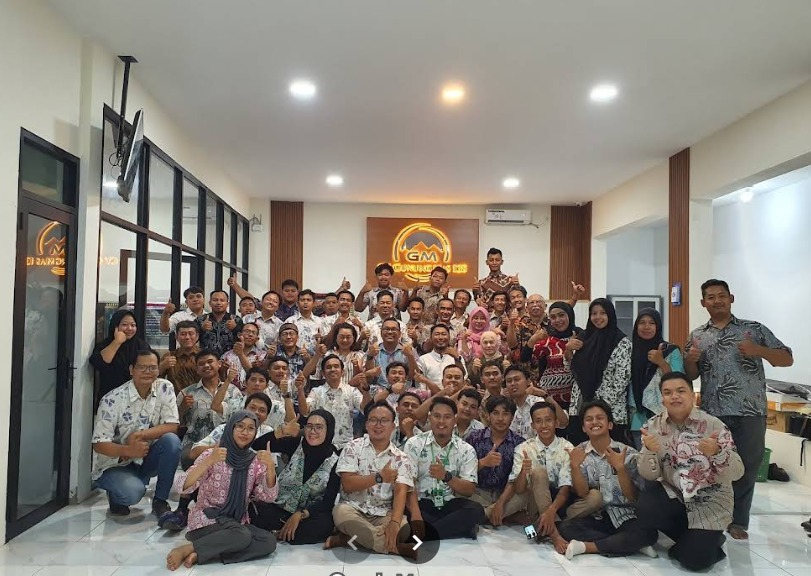
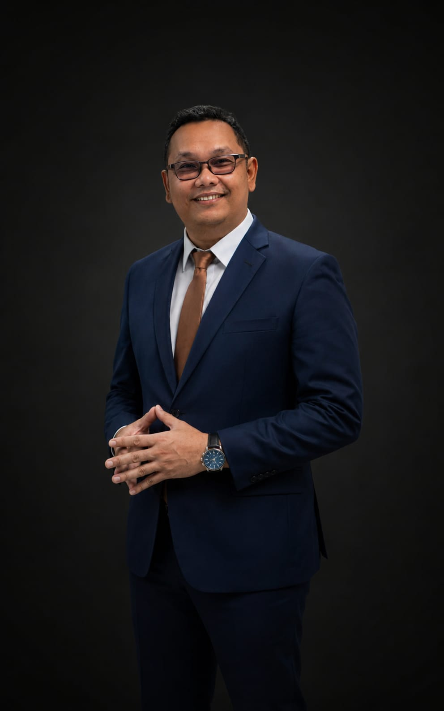
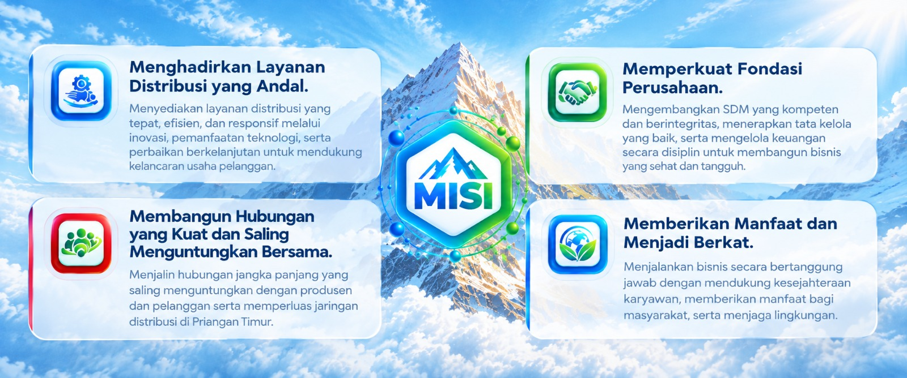
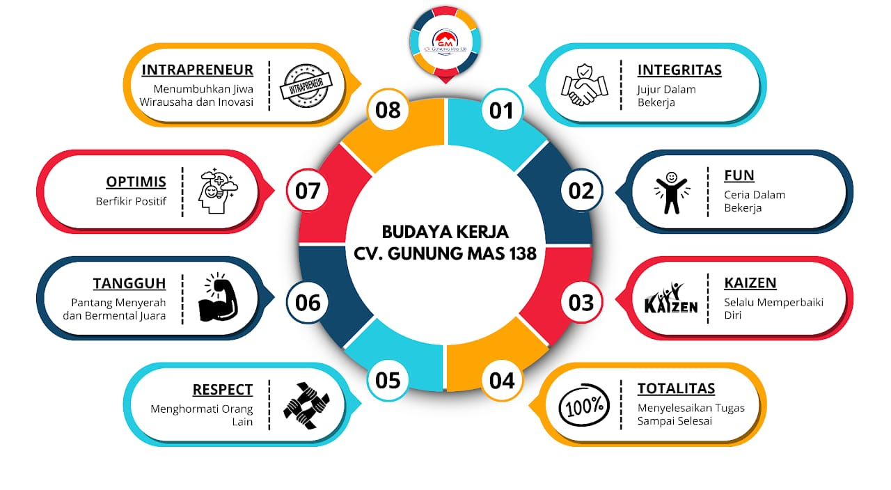
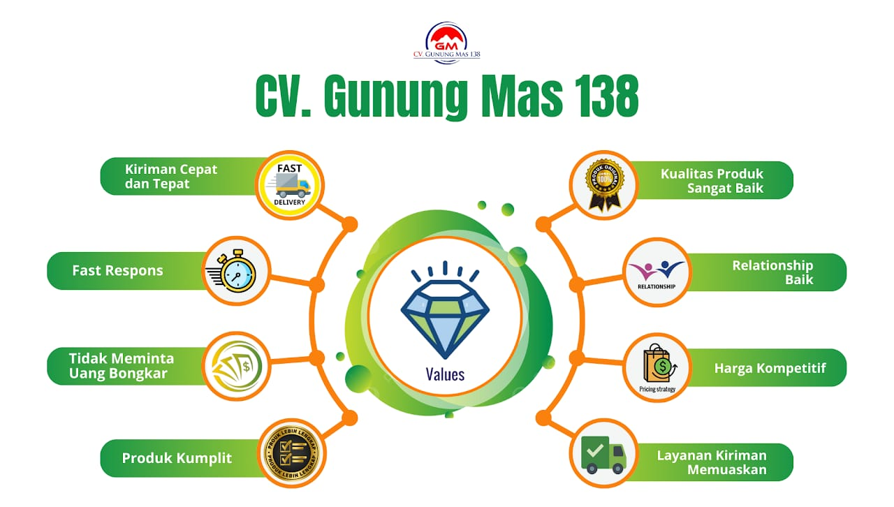
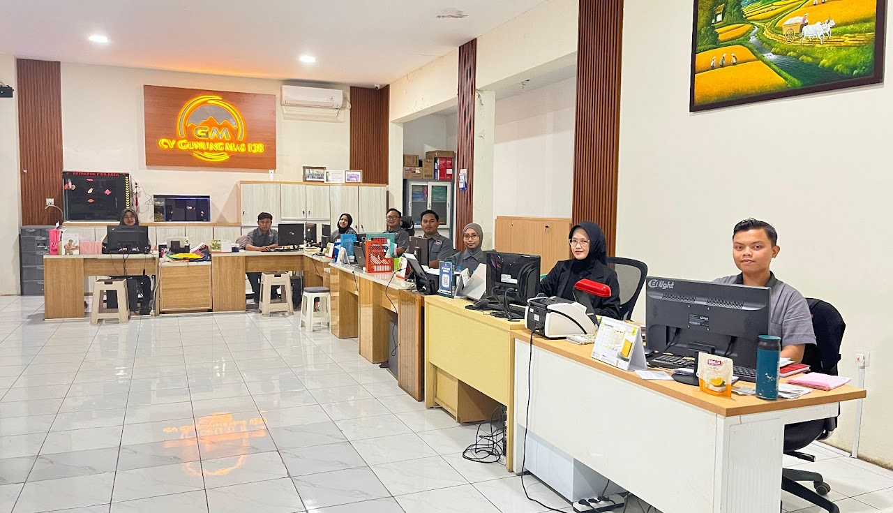
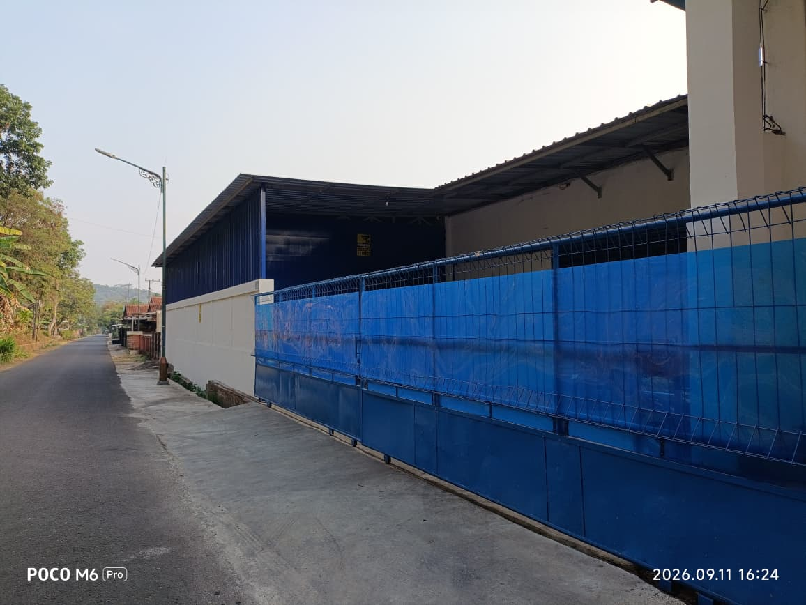
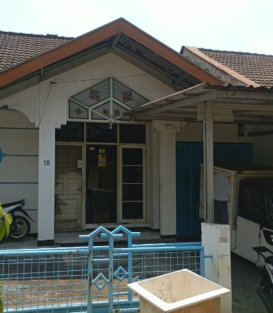

INTEGRITAS
Jujur dalam bekerja dan bertanggung jawab.


Hubungi KamiBisnis bukan sekadar tentang menjadi yang terbesar, tetapi tentang bagaimana terus bertumbuh dan berkelanjutan melalui inovasi, digitalisasi, serta perbaikan tanpa henti.
Menjadi perusahaan distribusi terdepan dan terpercaya di Priangan Timur, dengan fondasi bisnis dan keuangan yang kokoh, sebagai mitra pilihan produsen dan pelanggan yang bertumbuh secara berkelanjutan serta menjadi berkat bagi banyak orang.

Menyediakan layanan distribusi yang tepat, efisien, dan responsif melalui inovasi, pemanfaatan teknologi, serta perbaikan berkelanjutan untuk mendukung kelancaran usaha pelanggan.
Menjalin hubungan jangka panjang yang saling menguntungkan dengan produsen dan pelanggan serta memperluas jaringan distribusi di Priangan Timur.
Mengembangkan SDM yang kompeten dan berintegritas, menerapkan tata kelola yang baik, serta mengelola keuangan secara disiplin untuk membangun bisnis yang sehat dan tangguh.
Menjalankan bisnis secara bertanggung jawab dengan mendukung kesejahteraan karyawan, memberikan manfaat bagi masyarakat, serta menjaga lingkungan.

Nilai dan budaya ini menjadi fondasi dalam setiap langkah kami, membentuk cara kami bekerja dan melayani Anda dengan sepenuh hati.
Jujur dalam bekerja dan bertanggung jawab.
Ceria dalam bekerja dan menciptakan suasana positif.
Selalu memperbaiki diri menjadi lebih baik.
Menyelesaikan tugas sampai selesai.
Menghormati orang lain dalam setiap tindakan.
Pantang menyerah dan bermental juara.
Berpikir positif menghadapi tantangan.
Menumbuhkan jiwa wirausaha dan inovasi.

Nilai yang menjadi komitmen kami dalam memberikan pelayanan terbaik.
Dokumentasi kegiatan CV. Gunung Mas 138 bersama tim dan pelanggan.
Melayani kebutuhan Anda dengan lebih dekat, di berbagai wilayah di Indonesia.

Jl. Ir. H. Juanda No. 19,
Kota Tasikmalaya

Jl. Wirasantana No.211, Jajawar,
Kec. Banjar, Kota Banjar, Jawa Barat 46313

Jl. Jamika Baru 1 No. 18,
Kota Bandung